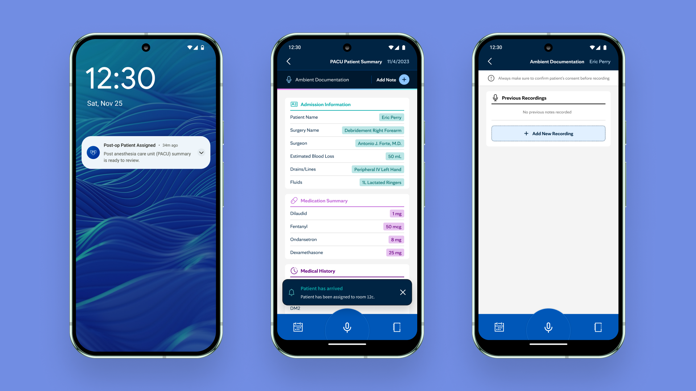
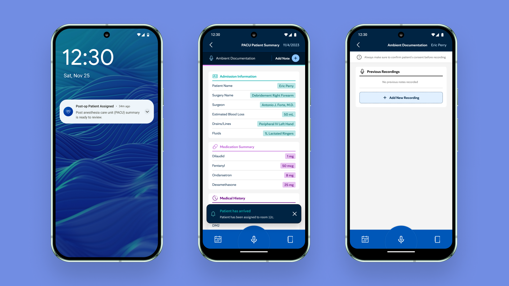

PACU Intake Use Case - (Nurse Persona)

Consultation Use Case - (Specialist Persona)

I joined Mayo Clinic's Center Digital Health as a Product Design lead for the Care Guidance product portfolio. Our objective was to deliver knowledge at the clinical point-of-care by empowering clinical teams through adaptable technical capabilities.
This mobile app serves as a comprehensive platform that enables seamless communication and collaboration among Mayo Clinic physicians.
PACU Intake Use Case - (Nurse Persona)

Consultation Use Case - (Specialist Persona)